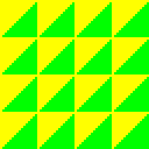
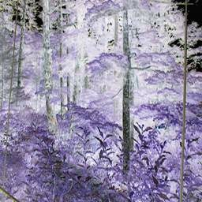
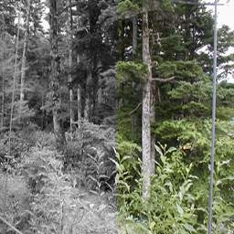

第 01 回
ピクセルシェーダーで画像の色を変える
この回の目標
- ピクセルシェーダーが「画面の 1 画素ずつ、色を決める関数」だと分かる。
- 画像の色を読んで、書き換えて出す、を自分で書ける。
開くサンプル

samples/C2_PixelShaderTest
テンプレート: templates/01_pixel_shader.dxtemplate(開き方は目次)
動かすと、画像の赤と青が入れ替わって表示されます。

元の画像(Tex1.bmp)→
シェーダーを通して描いた画面しくみ
ふつうの DrawGraph は、画像の色をそのまま画面に描きます。
シェーダーを使うと、その途中に「1 画素ごとに色を決める関数」を自分で差し込めます。これがピクセルシェーダーです。
関数は画素の数だけ呼ばれます。256×256 の画像なら 65,536 回です。GPU がまとめて同時に計算するので、それでも速く動きます。
読むところ
shaders/PixelShaderTestPS.hlsl
HLSL(シェーダー)Texture2D DiffuseMapTexture : register( t0 ) ; // 画像
SamplerState DiffuseMapSampler : register( s0 ) ; // 画像の読み方(補間するかなど)
t0の 0 は、C++ のSetUseTextureToShader( 0, 画像 )の 0 です。
HLSL(シェーダー)lTextureColor = DiffuseMapTexture.Sample( DiffuseMapSampler, PSInput.TextureCoord0 ) ;
Sampleで画像の色を読みます。TextureCoord0はテクスチャ座標(画像の左上が (0, 0)、右下が (1, 1))。- 色は
float4で、.r.g.b.a(赤・緑・青・不透明度)。どれも 0〜1 の数です(255 ではありません)。
HLSL(シェーダー)PSOutput.Output.r = lTextureColor.b ; // 赤に青を入れる
PSOutput.Output.b = lTextureColor.r ; // 青に赤を入れる
- 出した色(
SV_TARGET0)が画面に描かれます。
入力の並び(大事)
HLSL(シェーダー)struct PS_INPUT
{
float4 Position : SV_POSITION ;
float4 DiffuseColor : COLOR0 ;
float4 SpecularColor : COLOR1 ;
float2 TextureCoord0 : TEXCOORD0 ;
float2 TextureCoord1 : TEXCOORD1 ;
} ;
- 2D の描画(
DrawPolygon2DToShaderなど)では、この 5 つを、この順番で全部書きます。使わないものも消しません。 - 順番を変えると、エラーは出ないのに違う値が入ります(仕様書 1 章・3.1)。
src/main.cpp
C++pshandle = LoadPixelShader( "shaders/bin/PixelShaderTestPS.pso" ) ; // コンパイル済みのシェーダーを読む
SetUseTextureToShader( 0, texhandle ) ; // 画像を 0 番に
SetUsePixelShader( pshandle ) ; // このシェーダーを使う
DrawPolygon2DToShader( Vert, 2 ) ; // シェーダーを使って三角形 2 枚(四角)を描く
シェーダーのファイル(.hlsl)を書き換えたら、「すべてコンパイル」してから実行します。
課題
- ★1-1白黒にする。明るさは
dot( 色.rgb, float3( 0.299f, 0.587f, 0.114f ) )で求められる(人の目は緑をいちばん明るく感じるので、重みが違う)。求めた明るさを r・g・b に入れる。- 画像を写真(
TestTex1.jpg)に変えると分かりやすい。
- 画像を写真(
- ★1-2色を反転する(ネガ)。
1.0f - 色。 - ★★1-3セピア色にする。白黒の明るさに、茶色(例
float3( 1.0f, 0.8f, 0.6f ))を掛ける。 - ★★1-4画像の左半分だけ白黒にする。
PSInput.Position.xは、その画素の画面上の x 座標(画素)。
完成イメージを見る
元の写真
1-1 白黒

1-2 ネガ1-3 セピア

1-4 左半分だけ白黒解答例: 1-1 → answers/01_grayscale(【課題 1-1】 の所)
解答例を動かした画面
answers/01_grayscale